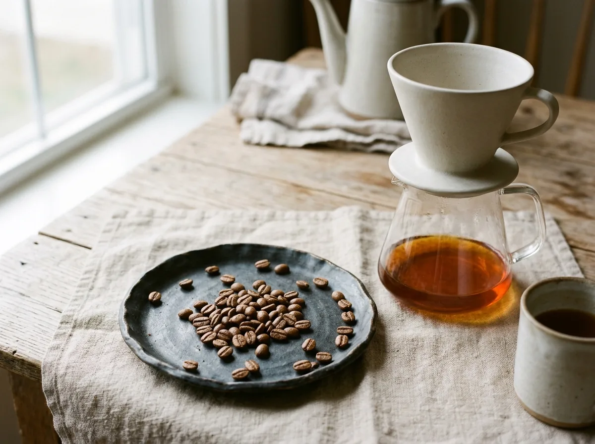

Small Batch Specialty Coffee
一粒の果実に宿る、
透明な余韻を焙煎する。
KŌRO ROASTERYは、世界のマイクロロット農園から届く生豆を、素材の個性が最も澄みわたる浅煎り〜中浅煎りで仕上げる小さな焙煎所です。毎朝の静かな一杯に、果実のような香りとクリーンな甘さを。
今月のシングルオリジンを聴くInteractive Tasting Profile
今月のシングルオリジン・味覚チャート
銘柄を選ぶと、味覚バランスと推奨ハンドドリップレシピが切り替わります。
エチオピア｜イルガチェフェ・チェルベサ
¥1,950 / 200gジャスミン、白桃、ベルガモットを思わせる華やかな香りと、紅茶のように澄んだ後味。
- 推奨豆量 / 湯量
- 15g / 240ml
- 湯温 / 時間
- 92℃ / 2分30秒
- 精製方法
- Washed（水洗式）
Roasting Philosophy
澄んだ甘さを引き出す、三つの基準。
-
01
農園の顔が見えるダイレクトトレード
カッピングスコア86点以上のマイクロロットのみを選定。標高・品種・精製工程まで透明な生豆を買い付けています。
-
02
5kg小釜での緻密なプロファイル管理
その日の気温と湿度に合わせて火力を秒単位で記録。焦げや渋みを出さず、果実本来のジューシーな酸味と長い余韻を残します。
-
03
焙煎後48時間以内の発送とエイジング案内
浅煎りの香味がもっとも開く焙煎後5〜14日目の飲み頃に合わせて、おすすめの抽出メモを添えてお届けします。
Home Brewing Guide
ご自宅で透明な一杯を淹れる標準レシピ
中細挽き 15g ／ 湯温 90〜92℃ ／ 合計湯量 240ml（円錐ドリッパー推奨）
| TIME | POUR | PROCESS |
|---|---|---|
| 0:00 | 40ml | 粉全体が均一に湿るように中心から静かに注ぎ、40秒蒸らしてガスを抜く。 |
| 0:40 | +80ml（計120ml） | のの字を描くようにゆっくり注ぎ、果実の華やかな酸味と香りを引き出す。 |
| 1:20 | +70ml（計190ml） | 湯面が下がり切る前に中心へ細く注ぎ、甘みの層を重ねる。 |
| 1:55 | +50ml（計240ml） | 2分30秒を目安に落ち切り。サーバーを軽く回して香りを均一に。 |
Roaster's Subscription
焙煎48時間以内に届く、豆の定期便。

毎月第1・第3水曜日に焙煎したばかりの豆（200g×2種／月額¥3,400・送料無料）を、おすすめの抽出レシピカードとともにポスト投函でお届けします。スキップや解約はいつでも可能です。
定期便を申し込む季節の飲み比べギフト（100g×3種）
活版印刷のテイスティングカード付き化粧箱入り。熨斗・メッセージカード対応（¥3,600税込）。
飲食店・オフィス向け卸販売
1kg単位から焙煎納品。お店の料理や焼き菓子に合わせたオリジナルブレンド開発も承ります。
粉に挽いて届けてもらうことはできますか？
はい、ご注文時に「豆のまま」「ハンドドリップ用（中細挽き）」「フレンチプレス用（粗挽き）」からお選びいただけます。
浅煎り豆のおすすめの保存方法を教えてください。
ガス抜きバルブ付きの専用袋のまま、直射日光を避けた涼しい場所で保管してください。1ヶ月以上保存する場合は小分けにして冷凍庫へ。
焙煎所で試飲してから購入できますか？
店頭のテイスティングバーにて、その日販売している全シングルオリジンを無料でご試飲いただけます。
Roastery & Tasting Bar
焙煎所のご案内
- ADDRESS
- 東京都江東区清澄白河 2-14-8 1F
- HOURS
- 09:00 – 18:00（火曜定休・焙煎日）
- TASTING
- 全ラインナップの試飲・挽き売り対応
- WHOLESALE
- 飲食店・オフィス向け卸販売承ります